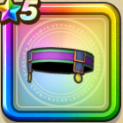

バトルティアラ
攻略班 7.0点 / 水系への耐性+5%マシン系への耐性+5%水系への耐性+5%ジバリア属性斬撃・体技ダメージ+2%
くわしい特徴
【レベル別習得スキル】 Lv1水系への耐性+5% Lv6さいだいHP+5 Lv8マシン系への耐性+5% Lv12ジバリア属性斬撃・体技ダメージ+2% Lv14水系への耐性+5% Lv18さいだいMP+5 Lv20守備力+7 【限界突破スキル】 1凸マシン系への耐性+5% 2凸守備力+5 3凸すばやさ+5 4凸さいだいHP+5